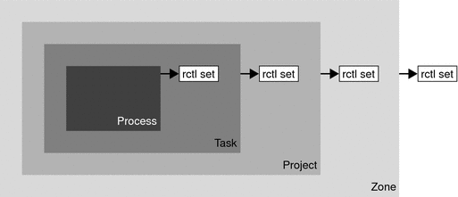

|
|||||||||||||||||||||||||||||||||||||||||||||||||||||||||||||||||||||||||||||||||||||||||||||||||||||||||||||||||||||||||||||||||||||||||||||||||||||||||||||||||||||||||||||||||||||||||||||||||||||||||||||||||
|
Solaris Virtualization Product Overview 1. Introduction to Solaris Resource Management 2. Projects and Tasks (Overview) 3. Administering Projects and Tasks 4. Extended Accounting (Overview) 5. Administering Extended Accounting (Tasks) 6. Resource Controls (Overview) Temporarily Updating Resource Control Values on a Running System Commands Used With Resource Controls 7. Administering Resource Controls (Tasks) 8. Fair Share Scheduler (Overview) 9. Administering the Fair Share Scheduler (Tasks) 10. Physical Memory Control Using the Resource Capping Daemon (Overview) 11. Administering the Resource Capping Daemon (Tasks) 13. Creating and Administering Resource Pools (Tasks) 14. Resource Management Configuration Example 15. Resource Control Functionality in the Solaris Management Console 16. Introduction to Solaris Zones 17. Non-Global Zone Configuration (Overview) 18. Planning and Configuring Non-Global Zones (Tasks) 19. About Installing, Halting, Cloning, and Uninstalling Non-Global Zones (Overview) 20. Installing, Booting, Halting, Uninstalling, and Cloning Non-Global Zones (Tasks) 21. Non-Global Zone Login (Overview) 22. Logging In to Non-Global Zones (Tasks) 23. Moving and Migrating Non-Global Zones (Tasks) 24. About Packages and Patches on a Solaris System With Zones Installed (Overview) 25. Adding and Removing Packages and Patches on a Solaris System With Zones Installed (Tasks) 26. Solaris Zones Administration (Overview) 27. Administering Solaris Zones (Tasks) 28. Troubleshooting Miscellaneous Solaris Zones Problems 29. About Branded Zones and the Linux Branded Zone 30. Planning the lx Branded Zone Configuration (Overview) 31. Configuring the lx Branded Zone (Tasks) 32. About Installing, Booting, Halting, Cloning, and Uninstalling lx Branded Zones (Overview) 33. Installing, Booting, Halting, Uninstalling and Cloning lx Branded Zones (Tasks) 34. Logging In to lx Branded Zones (Tasks) 35. Moving and Migrating lx Branded Zones (Tasks) 36. Administering and Running Applications in lx Branded Zones (Tasks) 37. Sun xVM Hypervisor System Requirements 38. Booting and Running the Sun xVM Hypervisor 40. Using virt-install to Install a Domain |
Configuring Resource Controls and AttributesThe resource controls facility is configured through the project database. See Chapter 2, Projects and Tasks (Overview). Resource controls and other attributes are set in the final field of the project database entry. The values associated with each resource control are enclosed in parentheses, and appear as plain text separated by commas. The values in parentheses constitute an “action clause.” Each action clause is composed of a privilege level, a threshold value, and an action that is associated with the particular threshold. Each resource control can have multiple action clauses, which are also separated by commas. The following entry defines a per-task lightweight process limit and a per-process maximum CPU time limit on a project entity. The process.max-cpu-time would send a process a SIGTERM after the process ran for 1 hour, and a SIGKILL if the process continued to run for a total of 1 hour and 1 minute. See Table 6-3. development:101:Developers:::task.max-lwps=(privileged,10,deny); process.max-cpu-time=(basic,3600,signal=TERM),(priv,3660,signal=KILL) typed as one line Note - On systems that have zones enabled, zone-wide resource controls are specified in the zone configuration using a slightly different format. See Zone Configuration Data for more information. The rctladm command allows you to make runtime interrogations of and modifications to the resource controls facility, with global scope. The prctl command allows you to make runtime interrogations of and modifications to the resource controls facility, with local scope. For more information, see Global and Local Actions on Resource Control Values, rctladm(1M) and prctl(1). Note - On a system with zones installed, you cannot use rctladm in a non-global zone to modify settings. You can use rctladm in a non-global zone to view the global logging state of each resource control. Available Resource ControlsA list of the standard resource controls that are available in this release is shown in the following table. The table describes the resource that is constrained by each control. The table also identifies the default units that are used by the project database for that resource. The default units are of two types:
Thus, project.cpu-shares specifies the number of shares to which the project is entitled. process.max-file-descriptor specifies the highest file number that can be assigned to a process by the open(2) system call. Table 6-1 Standard Project, Task, and Process Resource Controls
You can display the default values for resource controls on a system that does not have any resource controls set or changed. Such a system contains no non-default entries in /etc/system or the project database. To display values, use the prctl command. Zone-Wide Resource ControlsZone-wide resource controls limit the total resource usage of all process entities within a zone. Zone-wide resource controls can also be set using global property names as described in Setting Zone-Wide Resource Controls and How to Configure the Zone. Table 6-2 Zones Resource Controls
For information on configuring zone-wide resource controls, see Resource Type Properties and How to Configure the Zone. To use zone-wide resource controls in lx branded zones, see How to Configure, Verify, and Commit the lx Branded Zone. Note that it is possible to apply a zone-wide resource control to the global zone. See Using the Fair Share Scheduler on a Solaris System With Zones Installed for additional information. Units SupportGlobal flags that identify resource control types are defined for all resource controls. The flags are used by the system to communicate basic type information to applications such as the prctl command. Applications use the information to determine the following:
The following global flags are available:
Scaled values can be used with resource controls. The following example shows a scaled threshold value: task.max-lwps=(priv,1K,deny) Note - Unit modifiers are accepted by the prctl, projadd, and projmod commands. You cannot use unit modifiers in the project database itself. Resource Control Values and Privilege LevelsA threshold value on a resource control constitutes an enforcement point where local actions can be triggered or global actions, such as logging, can occur. Each threshold value on a resource control must be associated with a privilege level. The privilege level must be one of the following three types.
A resource control is guaranteed to have one system value, which is defined by the system, or resource provider. The system value represents how much of the resource the current implementation of the operating system is capable of providing. Any number of privileged values can be defined, and only one basic value is allowed. Operations that are performed without specifying a privilege value are assigned a basic privilege by default. The privilege level for a resource control value is defined in the privilege field of the resource control block as RCTL_BASIC, RCTL_PRIVILEGED, or RCTL_SYSTEM. See setrctl(2) for more information. You can use the prctl command to modify values that are associated with basic and privileged levels. Global and Local Actions on Resource Control ValuesThere are two categories of actions on resource control values: global and local. Global Actions on Resource Control ValuesGlobal actions apply to resource control values for every resource control on the system. You can use the rctladm command described in the rctladm(1M) man page to perform the following actions:
You can disable or enable the global logging action on resource controls. You can set the syslog action to a specific degree by assigning a severity level, syslog=level. The possible settings for level are as follows:
By default, there is no global logging of resource control violations. The level n/a indicates resource controls on which no global action can be configured. Local Actions on Resource Control ValuesLocal actions are taken on a process that attempts to exceed the control value. For each threshold value that is placed on a resource control, you can associate one or more actions. There are three types of local actions: none, deny, and signal=. These three actions are used as follows:
Not all of the actions can be applied to every resource control. For example, a process cannot exceed the number of CPU shares assigned to the project of which it is a member. Therefore, a deny action is not allowed on the project.cpu-shares resource control. Due to implementation restrictions, the global properties of each control can restrict the range of available actions that can be set on the threshold value. (See the rctladm(1M) man page.) A list of available signal actions is presented in the following table. For additional information about signals, see the signal(3HEAD) man page. Table 6-3 Signals Available to Resource Control Values
Resource Control Flags and PropertiesEach resource control on the system has a certain set of associated properties. This set of properties is defined as a set of flags, which are associated with all controlled instances of that resource. Global flags cannot be modified, but the flags can be retrieved by using either rctladm or the getrctl system call. Local flags define the default behavior and configuration for a specific threshold value of that resource control on a specific process or process collective. The local flags for one threshold value do not affect the behavior of other defined threshold values for the same resource control. However, the global flags affect the behavior for every value associated with a particular control. Local flags can be modified, within the constraints supplied by their corresponding global flags, by the prctl command or the setrctl system call. See setrctl(2). For the complete list of local flags, global flags, and their definitions, see rctlblk_set_value(3C). To determine system behavior when a threshold value for a particular resource control is reached, use rctladm to display the global flags for the resource control . For example, to display the values for process.max-cpu-time, type the following: $ rctladm process.max-cpu-time
process.max-cpu-time syslog=off [ lowerable no-deny cpu-time inf seconds ]The global flags indicate the following.
Use the prctl command to display local values and actions for the resource control. $ prctl -n process.max-cpu-time $$
process 353939: -ksh
NAME PRIVILEGE VALUE FLAG ACTION RECIPIENT
process.max-cpu-time
privileged 18.4Es inf signal=XCPU -
system 18.4Es inf none The max (RCTL_LOCAL_MAXIMAL) flag is set for both threshold values, and the inf (RCTL_GLOBAL_INFINITE) flag is defined for this resource control. An inf value has an infinite quantity. The value is never enforced. Hence, as configured, both threshold quantities represent infinite values that are never exceeded. Resource Control EnforcementMore than one resource control can exist on a resource. A resource control can exist at each containment level in the process model. If resource controls are active on the same resource at different container levels, the smallest container's control is enforced first. Thus, action is taken on process.max-cpu-time before task.max-cpu-time if both controls are encountered simultaneously. Figure 6-1 Process Collectives, Container Relationships, and Their Resource Control SetsGlobal Monitoring of Resource Control EventsOften, the resource consumption of processes is unknown. To get more information, try using the global resource control actions that are available with the rctladm command. Use rctladm to establish a syslog action on a resource control. Then, if any entity managed by that resource control encounters a threshold value, a system message is logged at the configured logging level. See Chapter 7, Administering Resource Controls (Tasks) and the rctladm(1M) man page for more information. |
||||||||||||||||||||||||||||||||||||||||||||||||||||||||||||||||||||||||||||||||||||||||||||||||||||||||||||||||||||||||||||||||||||||||||||||||||||||||||||||||||||||||||||||||||||||||||||||||||||||||||||||||
|